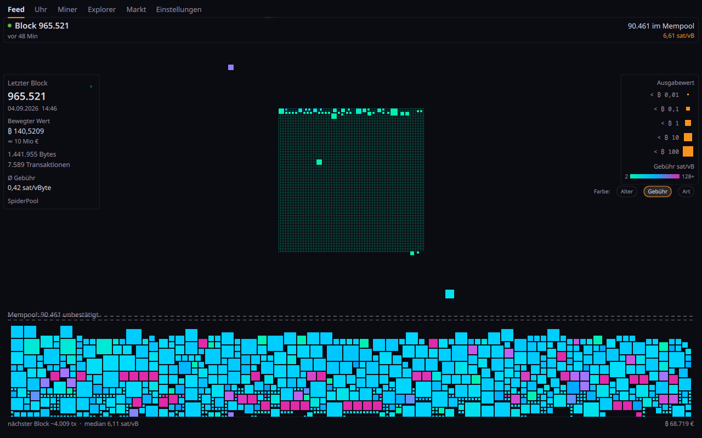
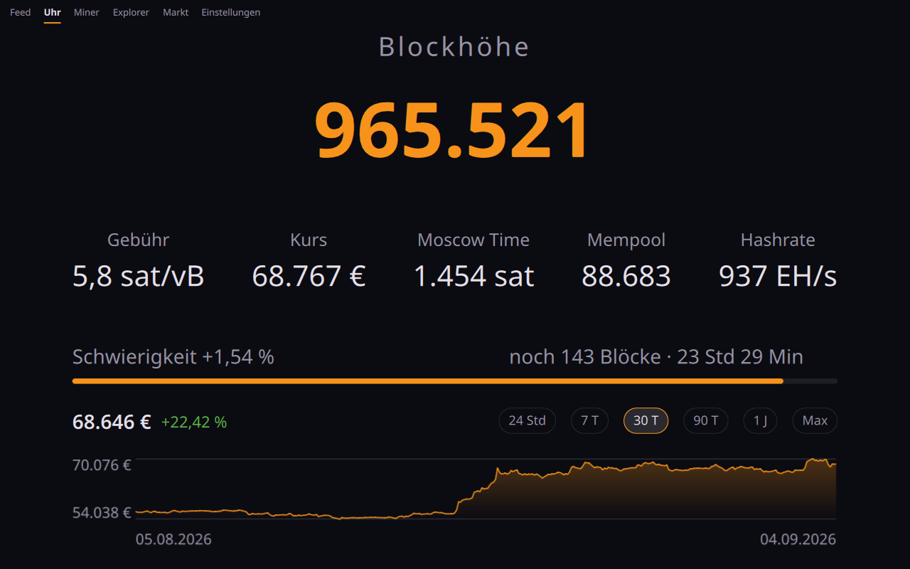
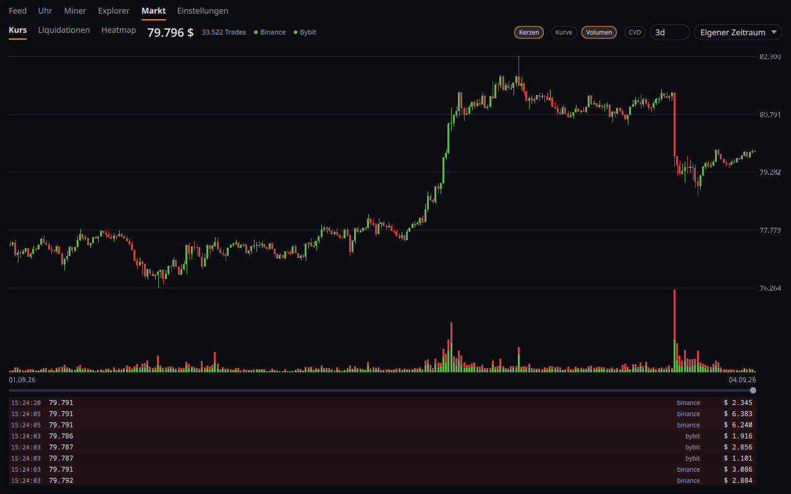

The Bitcoin mempool, live
Waiting transactions fall onto a heap as a tile mosaic, sized by what they move and coloured by age, fee or type. Confirmed ones fly into the block. You watch the network breathe.
MIT licensedNo account, no telemetryWatch-only, no keysSix views, five hosts



What it is
OrangeDeck draws the Bitcoin mempool the way it actually behaves. Every waiting transaction is a square. It piles up, it gets mined, it gets replaced — and you see it happen instead of reading a number.
Around that sit five more views: a block clock for a tablet on the wall, figures from your own miner, a block explorer, watch-only addresses, and a market tab with candles, cumulative volume delta and liquidations.
Six views
- 01FeedThe mempool as a living mosaic, with the last block beside it. Colour by age, fee or transaction type.
- 02ClockBlock height, fees, price, hashrate and the halving countdown — large, without controls. For a tablet on the wall.
- 03MinerHashrate and best difficulty from your own Bitaxe, held against the network difficulty.
- 04ExplorerSearch by height, hash, txid or address. Browse blocks and their contents, see what replaced what.
- 05WatchYour own addresses, watch-only. Your transactions are highlighted while they sit in the heap.
- 06MarketCandles, cumulative volume delta and liquidations, aggregated across exchanges.
Where it runs
- Any Linux desktopAn ordinary window. Wayland with an X11 fallback.
- As a widget or barLayer-shell on niri, sway, Hyprland, river, labwc.
- Inside DankMaterialShellAs a dashboard tab, a panel pill or a desktop widget.
- Windows and macOSSame build, same views.
- AndroidPhone or tablet. Each view has its own home screen shortcut.
Why OrangeDeck
- 01It is a viewer, and nothing elseIt knows no private key, cannot sign, and carries no library that could. Watch-only means watch-only.
- 02No server of oursIt talks to mempool.space or to your own node. There is no counting, no crash reports and no account.
- 03Measured, not guessedWhere a number is a model rather than a measurement — the liquidation heatmap — it says so on screen, with the assumptions written out.
- 04One codebase, five hostsThe same QML draws the window, the widget, the panel and the phone. What is fixed in one place is fixed everywhere.
- 05Yours to readMIT licensed, no obfuscation, and the reasoning is in the commit messages rather than lost.
Questions
Does it need my keys?
No. It cannot sign anything. Watched addresses are entered as addresses or an xpub and never leave your machine except as a balance query.
Where does the data come from?
From mempool.space by default, or from your own mempool instance — that is a single setting. Market data comes from the exchanges' public feeds.
Does it phone home?
No. There is no server of ours, no analytics and no crash reporting.
What does it cost?
Nothing. It is MIT licensed and there is no paid tier.
Is the liquidation heatmap real data?
No, and it says so on screen. Nobody publishes other people's positions; it is a model with its assumptions written out.
Can I run it on a tablet on the wall?
That is what the clock view is for — large figures, no controls. The Android build carries a shortcut straight into it.